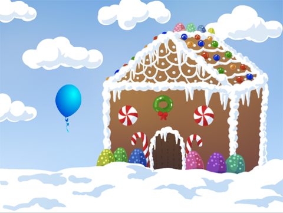
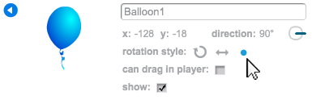
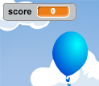
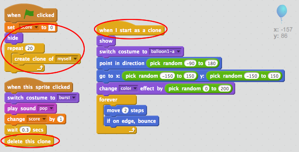
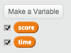
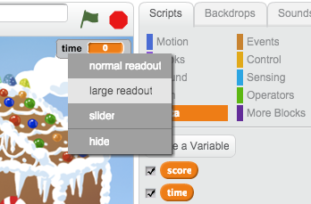
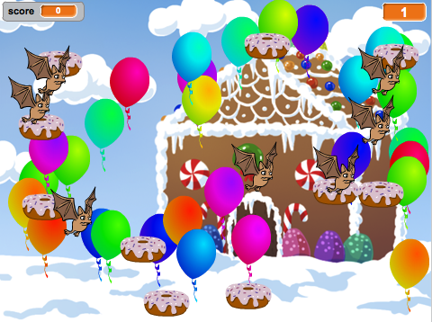

Start a new Scratch project, and delete the cat sprite so that your project is empty. You can find the online Scratch editor at jumpto.cc/scratch-new.
Add in a new balloon sprite, and a suitable stage backdrop.
screenshot
Add this code to your balloon, so that it bounces around the screen:
when flag clicked
go to x:(0) y:(0)
point in direction (45 v)
forever
move (1) steps
if on edge, bounce
end
Test out your balloon. Does it move too slowly? Change the numbers in your code if you want to speed it up a bit.
Did you also notice that your balloon flips as it moves around the screen?
screenshot
Balloons don’t move like this! To fix this, click on the balloon sprite icon, and then click the blue i information icon.
In the ‘rotation style’ section, click the dot to stop the balloon rotating.
screenshot
Test your program again to see if the problem is fixed.
Save your project
Step 2: Random balloons
Activity Checklist
With the code you have now, your balloon will always start in the same place and move in the same path. Click the flag a few times to start your program, and you’ll see it’s the same every time.
Instead of using the same x and y position each time, you can let Scratch choose a random number instead. Change your balloon’s code, so that it looks like this:
when flag clicked
go to x:(pick random (-150) to (150)) y:(pick random (-150) to (150))
point in direction (45 v)
forever
move (1) steps
if on edge, bounce
end
If you click the green flag a few times, you should notice that your balloon starts in a different place each time.
You could even use a random number to choose a random balloon colour each time:
change [colour v] effect by (pick random (0) to (200))
screenshot
What happens if this code is put at the start of your program? Does anything different happen if you put this code inside the forever loop? Which do you prefer?
Save your project
Challenge: More randomness
Can you make your balloon start by pointing in a random direction (between -90 and 180)?
Save your project
Step 3: Popping balloons
Lets allow the player to pop the balloons!
Activity Checklist
Click on your balloon sprite, and then click the ‘Costumes’ tab. You can delete all of the other costumes, just leaving 1 balloon costume. Add a new costume, by clicking ‘Paint new costume’ and create a new costume called ‘burst’.
screenshot
Make sure that your balloon switches to the right costume when the game starts. Your code should now look like this:
when flag clicked
switch costume to [balloon1-a v]
point in direction (pick random (-90) to (180))
go to x:(pick random (-150) to (150)) y:(pick random (-150) to (150))
change [color v] effect by (pick random (0) to (200))
forever
move (1) steps
if on edge, bounce
end
To allow the player to burst a balloon, add this code:
when this sprite clicked
switch costume to [burst v]
play sound [pop v]
Test out your project. Can you pop the balloon? Does it work as you expected? You’ll need to improve this code, so that when the balloon is clicked, it shows the ‘burst’ costume for a short time, and is then hidden. You can make all of this happen by changing your balloon when sprite clicked code to this:
when this sprite clicked
switch costume to [burst v]
play sound [pop v]
wait (0.3) secs
hide
Now that you’re deleting the balloon when it’s clicked, you’ll also need to add a show block to the start of the when flag clicked code.
Try popping a balloon again, to check that it works properly. If you find it difficult to pop the balloon without dragging it around, you can play the game in fullscreen mode by clicking this button:
screenshot
Save your project
Step 4: Adding a score
Let’s make things more interesting by keeping score.
Activity Checklist
To keep the player’s score, you need a place to put it. A variable is a place to store data that can change, like a score.
To create a new variable, click on the ‘Scripts’ tab, select Data and then click ‘Make a Variable’.
screenshot
Type ‘score’ as the name of the variable, make sure that it is available for all sprites, and click ‘OK’ to create it. You’ll then see lots of code blocks that can be used with your score variable.
screenshot
You’ll also see the score in the top-left of the stage.
screenshot
When a new game is started (by clicking the flag), you want to set the player’s score to 0. Add this code to the top of the balloon’s when flag clicked code:
set [score v] to [0]
Whenever a balloon is popped, you need to add 1 to the score:
when this sprite clicked
switch costume to [burst v]
play sound [pop v]
wait (0.3) secs
change [score v] by (1)
hide
Run your program again and click the balloon. Does your score change?
Save your project
Step 5: Lots of balloons
Popping 1 balloon isn’t much of a game, so let’s add lots more!
One simple way to get lots of balloons is just to right-click on the balloon sprite and click ‘duplicate’. This is OK if you only want a few, but what if you need 20? or 100? Are you really going to click ‘duplicate’ that many times?
Activity Checklist
A much better way of getting lots of balloons is to clone the balloon sprite.
Drag your balloon when flag clicked code (except the score block) off of the event (don’t delete it), and instead add code to create 20 balloon clones.
You can now attach the code you’ve just removed to the when I start as a clone event. You should also replace the hide block in the balloon-clicking script with a delete this clone block.
Your balloon code should now look like this:
screenshot
Test your project! Now when the flag is clicked, your main balloon sprite will hide and then clone itself 20 times. When each of these 20 clones is started, they will each bounce around the screen randomly, just as they did before. See if you can pop the 20 balloons!
Save your project
Step 6: Adding a timer
You can make your game more interesting, by only giving your player 10 seconds to pop as many balloons as possible.
Activity Checklist
You can use another variable to store the remaining time left. Click on the stage, and create a new variable called ‘time’:
screenshot
This is how the timer should work:
The timer should start at 10 seconds;
The timer should count down every second;
The game should stop when the timer gets to 0.
Here’s the code to do this, which you can add to your stage:
when flag clicked
set [time v] to [10]
repeat until <(time) = [0]>
wait (1) secs
change [time v] by (-1)
end
stop [all v]
To add the repeat untiltime= 0 code, first you’ll need to drag a green = block, onto your repeat until block:
screenshot
You can then drag your time variable onto the = block:
screenshot
Drag your ‘time’ variable display to the right side of the stage. You can also right-click on the variable display and choose ‘large readout’ to change how the time is displayed.
screenshot
Test your game. How many points can you score? If your game is too easy, you can:
Give the player less time;
Have more balloons;
Make the balloons move faster;
Make the balloons smaller.
Test your game a few times until you’re happy that it’s the right level of difficulty.
Save your project
Challenge: More objects
Can you add in other objects to your game? You can add good objects, like donuts, that give you lots of points, or bad objects, like bats, that take points away.
screenshot
You’ll need to think about the objects you’re adding. Think about:
How many will there be?
How big is it? How does it move?
How many points will you score (or lose) for clicking it?
Will it move faster or slower than the balloons?
What will it look/sound like when it’s been clicked?
If you need help adding another object, you can reuse the steps above!
Save your project
Hi there!
Seems like this is your first time here. Would you like a tour?

 In the ‘rotation style’ section, click the dot to stop the balloon rotating.
In the ‘rotation style’ section, click the dot to stop the balloon rotating.